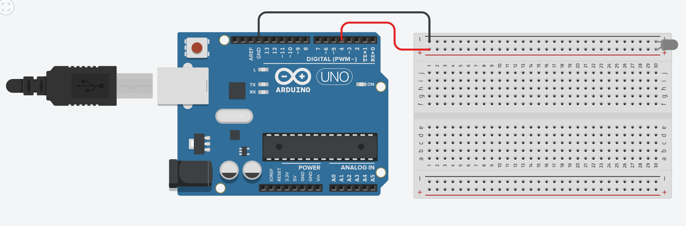
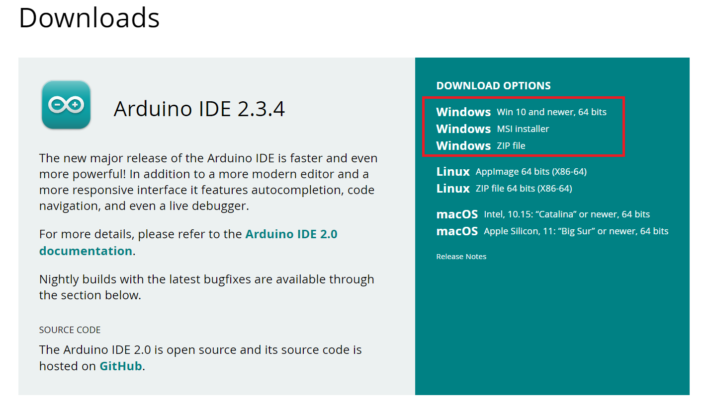
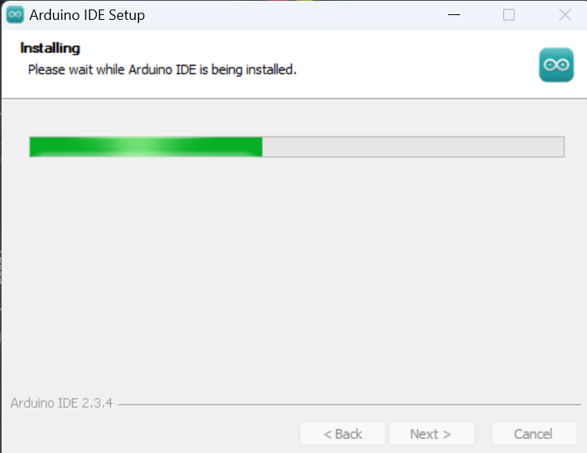
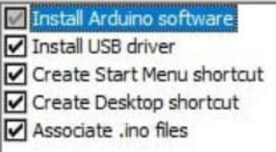
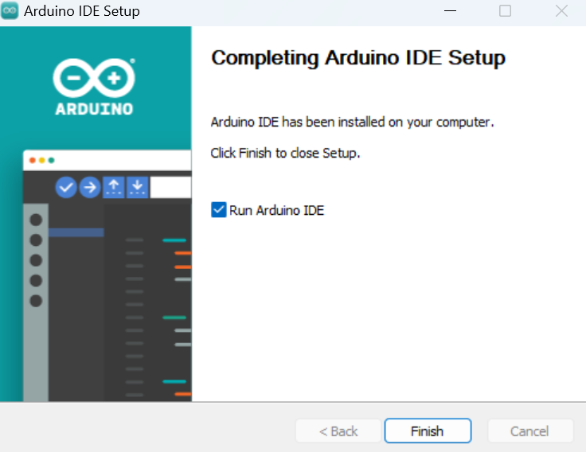
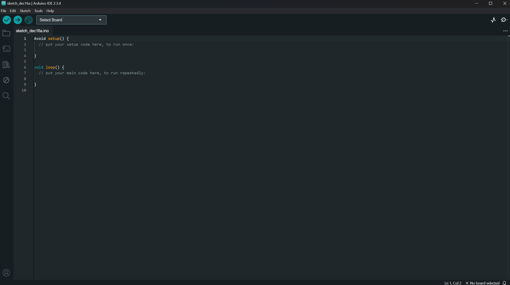
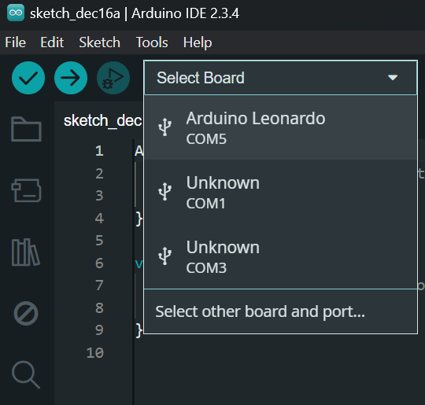

Understanding the polarization of your 3D glasses is crucial for screen compatibility. For example, if you plan to play 3D pinball games, which often use vertically oriented screens, you would typically need horizontally polarized glasses.
Warning
Screen polarization can vary. It's possible that your chosen 3D glasses may not work with certain screens due to conflicting polarization directions. In such cases, you may need to acquire glasses with the opposite polarization.
Note
While some older 3D screens have built-in IR emitters, this guide focuses exclusively on setting up new screens for 3D viewing.
Refer to the wiring diagram above. We have designed this setup to be as straightforward as possible.
Connect the Red Wire from Digital Port 4 on the Arduino to the Red Lane (positive rail) on the breadboard.
Connect the Black Wire from the Ground Port on the Arduino to the Black Lane (negative rail) on the breadboard.
Note
Resistors are non-polarized components, meaning their orientation does not matter. Place the 220 Ohm Resistor between the Red Lane and Column 2 on the breadboard.
Note
LEDs are polarized components, meaning they have a specific orientation. Place the IR LED with its leads in Column 2 and Column 3, across either Row F or Row G.
Finally, use a smaller wire to connect the Black Lane to Column 3 on the breadboard.
Typically, the longer ‘leg’ or pin of an LED indicates the ANODE (+) Positive terminal. If the leads have been trimmed, look for a flat edge on the LED casing, which marks the CATHODE (-) Negative terminal.
Warning
Incorrectly wiring the IR LED can cause it to "pop" and be destroyed. Always ensure correct polarization.
Additionally, improper wiring can damage the ports on your Arduino board.

Always heed these warnings to prevent damage to your components.
With the wiring complete, it’s time to prepare the software. Begin by plugging in your Arduino board to your computer.
Download the Arduino IDE
First, you need to install the Arduino Integrated Development Environment (IDE) and its drivers. This software is essential for programming your Arduino board.

Run the Installer
Execute the downloaded installer file.

Install Drivers
During the installation, you will be prompted to install necessary drivers. Agree to these prompts; they are safe.

You may see several pop-up windows; please accept them to ensure proper driver installation.¶
Start the Arduino IDE
Once the installation is complete, launch the Arduino IDE.

Configure the Board in the IDE
You will need to select your specific Arduino board and the correct communication port (COM Port) within the IDE.

Select Your Board and COM Port
Navigate through the IDE menus to select your Arduino board model and the COM port it is connected to.

Note
The specific COM port (e.g., COM5) and board name (e.g., Keystudio Leonardo) will vary depending on your system and the Arduino board you are using.
Verify IDE Setup
Your Arduino IDE should now display the selected board and port, similar to the image below.